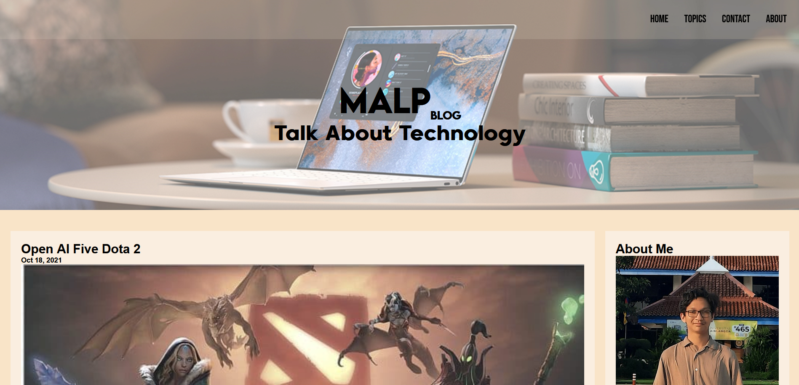
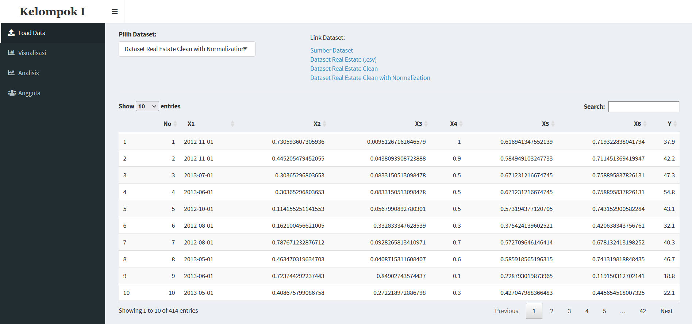
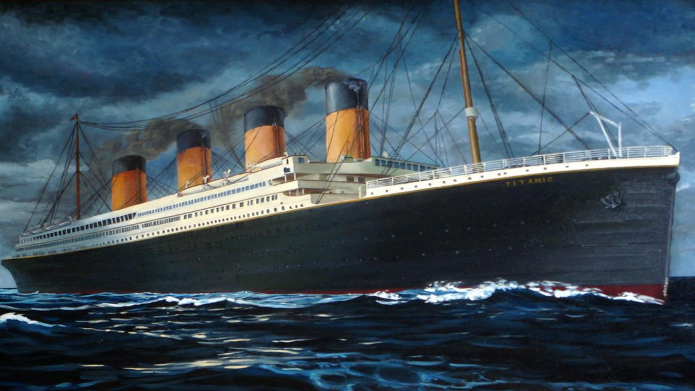
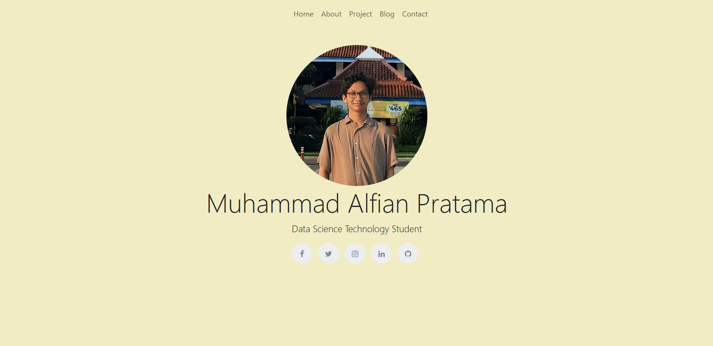
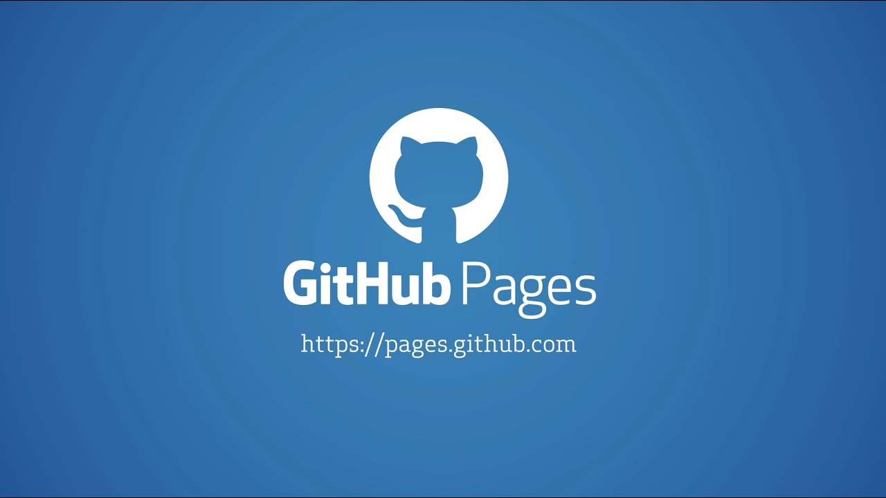

Data Science Technology Student
Halo semua! Perkenalkan nama saya Muhammad Alfian Pratama, saya merupakan mahasiswa semester 4 Teknologi Sains Data Universitas Airlangga. Saya sangat tertarik dengan dunia teknologi, terutama Sains Data, Artificial Intelligence, dan Technopreneurship. Saya juga sangat suka mempelajari hal baru. Selain itu, saya sangat suka berorganisasi dan mengikuti kepanitiaan acara untuk pengembangan soft skill saya.

Pada project ini saya membuat web statis untuk digunakan sebagai blog pribadi. Project ini ditujukan untuk memenuhi penugasan mata kuliah Algoritma Pemrograman 2.
Github Repository
Pada project ini saya membuat sebuah dashboard tentang dataset UCI Real Estate. Project ini dibuat bersama dengan teman-teman kelompok saya. Project ini ditujukan untuk UAS KMMI mata kuliah Eksplorasi dan Visualisasi Data. Dashboard ini bisa menunjukan visualisasi data, menampilkan model dan memprediksi dari model regresi linier yang dibuat.
Github Repository Dashboard
Pada project ini saya membuat 3 model Machine Learning yaitu Random Forest, XGBoost, dan Neural Network untuk menyelesaikan permasalahan pada Kaggle Titanic Dataset.
Github Repository
Pada project ini saya membuat web pribadi yang memuat identitas diri, portfolio karya, dan lainnya yang saat ini sedang anda akses. Project ini ditujukan untuk memenuhi project UTS mata kuliah Algoritma Pemrograman 2.
Github Repository Laporan
Disini saya ingin sharing bagaimana cara membuat web statis anda bisa diakses oleh orang banyak menggunakan Github Page dengan sistem Git.
Baca Selengkapnya